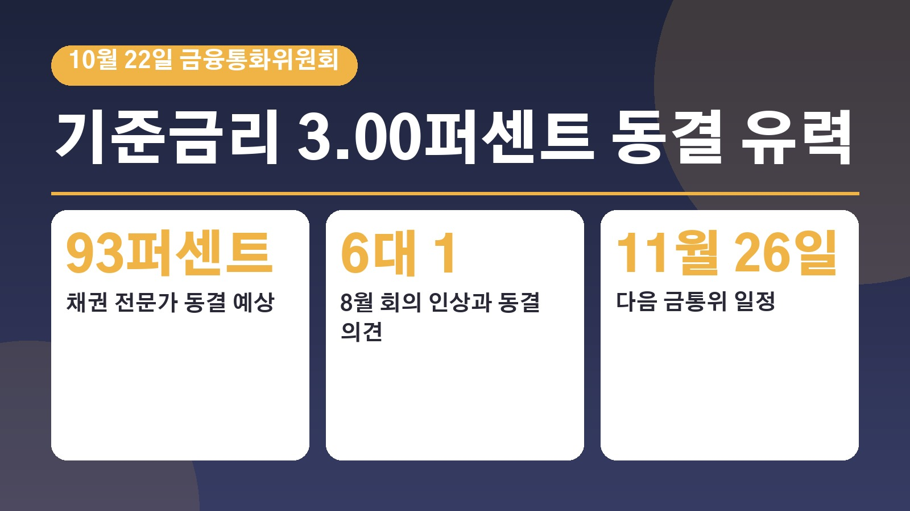
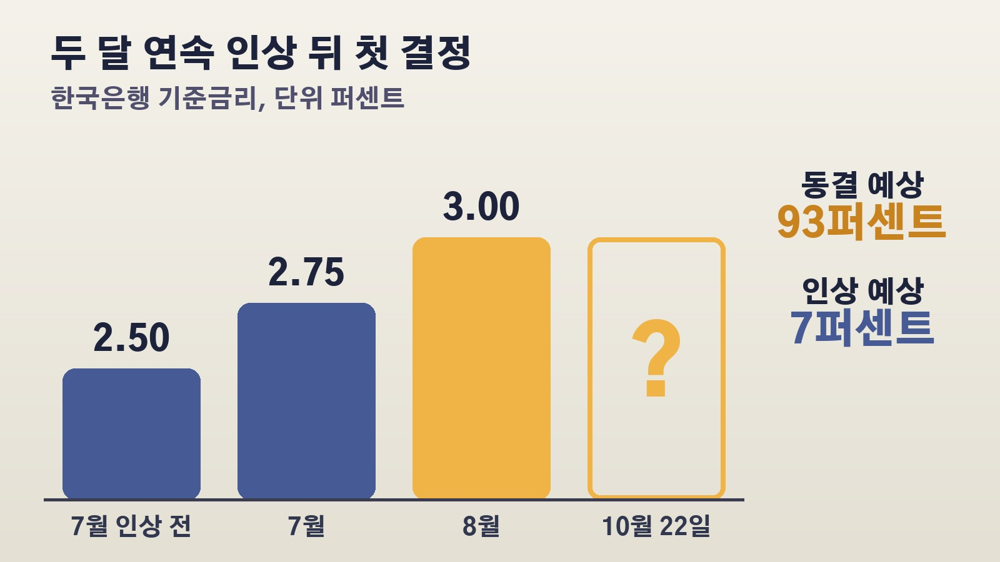

22일 금통위 기준금리 3.00퍼센트 동결이 유력해도, 대출 있는 분들이 봐야 할 인상 소수의견과 11월 신호

지난여름 한국은행이 두 달 연속 기준금리를 올린 뒤로, 대출이 있는 분들이라면 이번 달 결정에 눈이 갈 수밖에 없으실 거예요. 오는 22일 목요일 한국은행 금융통화위원회가 기준금리를 결정합니다. 시장에서는 동결을 거의 기정사실로 보는 분위기인데, 정작 중요한 건 동결 여부보다 그 뒤에 나올 신호라는 분석이 많아요. 왜 그런지, 무엇을 보면 되는지 차근차근 정리해 볼게요.
22일 금통위, 지금 기준금리와 시장의 예상
현재 기준금리는 연 3.00퍼센트입니다. 한국은행은 지난 7월 2.50퍼센트에서 2.75퍼센트로, 8월에 다시 3.00퍼센트로 두 달 연속 0.25퍼센트포인트씩 올렸어요. 한국은행이 연속으로 금리를 올린 건 2023년 이후 처음이었습니다. 이번 회의는 이 연속 인상 뒤 처음 열리는 자리로, 추석 연휴가 겹치면서 두 달 만에 열립니다.
시장의 예상은 한쪽으로 쏠려 있어요. 금융투자협회가 20일 발표한 설문 결과를 보면, 지난 12일부터 15일까지 53개 기관의 채권 관련 종사자 100명에게 물었더니 93퍼센트가 이번 달 동결을 예상했고 나머지 7퍼센트는 인상을 점쳤습니다. 금융투자협회는 두 차례 연속 인상의 효과를 점검하려 할 것이라는 기대 때문에 동결 응답이 우세했다고 설명했어요.
동결 예상인데 왜 매파적 동결이라고 할까
동결이 유력한데도 시장이 긴장을 풀지 않는 이유는 지난 회의의 분위기 때문이에요. 매일경제TV 보도에 따르면 8월 회의 때 금통위원 7명 가운데 6명이 인상에 찬성했고, 황건일 위원만 동결 의견을 냈습니다. 위원들의 6개월 뒤 금리 전망을 점으로 찍은 표에서도 전체 21개 점 가운데 16개가 3.25퍼센트 이상에 찍혔어요.
신현송 총재도 8월에 앞으로 6개월 동안 네 차례 회의 가운데 한 번 정도 인상을 예상한다고 말했고, 지난주 국제통화기금 연차총회 계기 대담에서는 물가가 목표로 수렴한다는 확신이 들 때까지 긴축 기조를 유지하겠다고 밝혔습니다. 그래서 이번에 금리를 묶더라도 추가 인상 가능성은 열어 두는, 이른바 매파적 동결이 될 거라는 전망이 많아요. 매파는 물가를 잡기 위해 금리를 올리는 쪽에 무게를 두는 입장을 말합니다.
물가는 2퍼센트대로 내려왔지만 속사정은 다르다
겉으로 보이는 물가 숫자만 보면 한숨 돌린 것처럼 보여요. 9월 소비자물가는 1년 전보다 2.9퍼센트 올라, 8월 3.1퍼센트에서 다시 2퍼센트대로 내려왔습니다.
하지만 여기에는 정부 정책 효과가 크게 작용했어요. 정부는 석유 최고가격제가 9월 물가 상승률을 0.6퍼센트포인트 낮춘 것으로 분석했고, 이 제도가 없었다면 상승률이 3.5퍼센트에 달했을 것으로 추정했습니다. 석유류 가격은 1년 전보다 14.8퍼센트 뛰었고, 물가 상승률이 3퍼센트를 넘는 품목의 비중도 4월 29퍼센트에서 9월 37퍼센트로 다섯 달 연속 늘었어요. 한국은행은 이번 달 물가도 3퍼센트 안팎의 높은 수준이 이어질 것으로 내다봤습니다.
채권시장 설문에서도 이 걱정이 드러났어요. 미국의 9월 소비자물가가 예상보다 높게 나오고 중동 긴장이 다시 커지면서, 물가가 내려갈 것이라고 본 응답자는 3퍼센트로 전달보다 10퍼센트포인트 줄었습니다.

환율은 한숨 돌렸고, 집값은 다시 꿈틀
한국은행이 저울질하는 변수로는 물가와 함께 환율과 집값이 꼽혀요. 환율 쪽은 부담이 줄었습니다. 연합인포맥스에 따르면 달러 대비 원화 월평균 환율은 8월 1,406.71원에서 9월 1,359.09원, 10월 들어 1,345.07원으로 내려왔어요. 환율이 내려가면 수입물가를 낮추는 데 도움이 될 수 있습니다.
반면 집값은 다른 신호를 보내고 있어요. 서울 아파트 매매가격 주간 상승률은 9월 말 0.09퍼센트까지 낮아졌다가 10월 첫째 주 0.12퍼센트, 둘째 주 0.16퍼센트로 다시 커졌습니다. 강남권은 약세지만 강북과 외곽의 상승세가 이어지고 있다는 분석이에요. 환율 부담은 덜었지만 부동산 경계는 남아 있는 셈입니다.
시장금리에 대한 기대는 조금 달라졌어요. 채권시장 설문에서 앞으로 시장금리가 내려갈 것으로 본 응답은 40퍼센트로 전달보다 19퍼센트포인트 늘었습니다. 국내 증시 조정에 따른 위험 회피 심리와 한미 기준금리 동결 기대가 맞물린 결과라는 설명이에요.
22일 이후 꼭 볼 두 가지와 다음 일정
22일 결정이 나오면 먼저 인상 소수의견이 몇 명인지 보시면 됩니다. 추가 인상을 지지하는 위원이 얼마나 되는지 가늠할 수 있는 단서이기 때문이에요. 한국씨티은행은 1명, 모건스탠리는 2명의 인상 소수의견을 예상했고, 하나증권은 만장일치 동결을 전망하면서도 인상 흐름이 끝난 건 아니라고 봤습니다.
두 번째는 총재가 11월 인상 가능성을 얼마나 열어 두느냐예요. 시장의 기본 시나리오는 이번 달 동결, 11월 추가 인상입니다. 다음 금통위는 11월 26일이고, 그 사이 27일부터 이틀 동안 미국 연방공개시장위원회도 열려요. 미국은 9월에 기준금리를 3.75에서 4.00퍼센트로 올렸고, 현재 한미 금리 차이는 미국 상단 기준 1퍼센트포인트입니다.
최종금리를 두고는 전망이 갈립니다. 한국씨티은행과 모건스탠리는 내년 초 3.50퍼센트까지 오를 것으로 봤고, 11월 한 번 올린 3.25퍼센트에서 멈출 것이라는 전망도 있어요. 정리하면 22일 동결 자체보다는 소수의견 숫자와 총재의 11월 관련 발언이 대출 금리 흐름을 가늠할 실마리가 될 가능성이 큽니다. 22일에는 결정 숫자와 함께 총재의 발언까지 같이 챙겨 보시면 좋겠어요.
참고한 기사: 연합뉴스 채권시장 참여자 93퍼센트 10월 금통위서 기준금리 동결 예상 2026년 10월 20일, 연합인포맥스 채권시장 참여자 93퍼센트 10월 금통위 기준금리 동결 예상 2026년 10월 20일, 연합인포맥스 정선미의 돈터치 한은이 번 시간 2026년 10월 20일, 매일경제TV 백투백 인상 후 첫 금통위 매파적 동결 무게 관전 포인트는 2026년 10월 19일
태그
기준금리 금통위 기준금리동결 한국은행 신현송총재 매파적동결 소수의견 대출금리 소비자물가 11월금통위